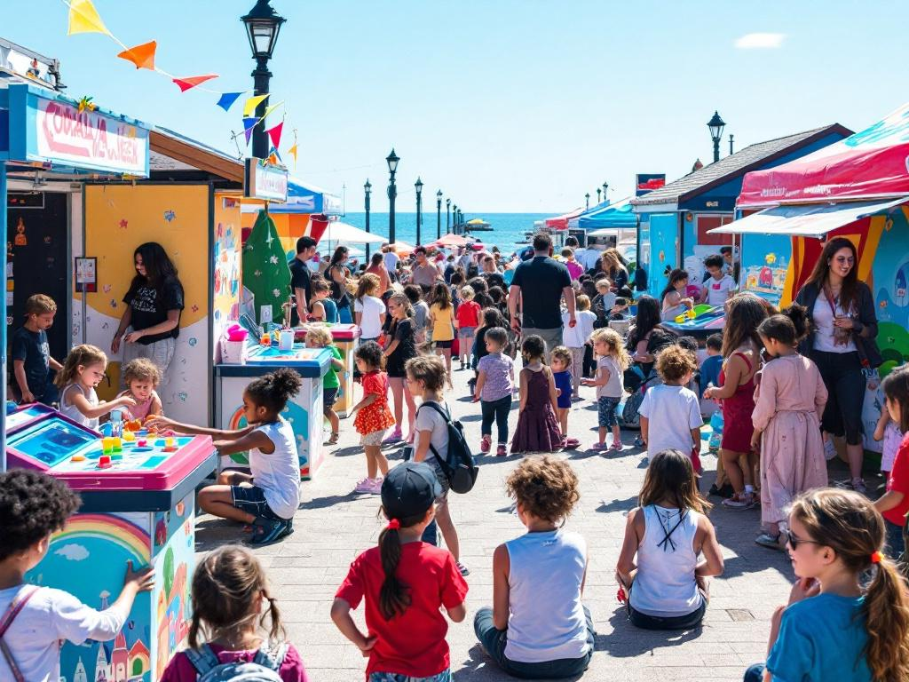

|
|||
|
Coralia 2032 transforme les lagons de La Réunion en véritables jardins aquatiques. Notre projet se concentre sur deux sites emblématiques où nous développons des solutions innovantes pour la préservation et l'aménagement des récifs coralliens. |
|||
Front de mer, Saint-PierreUn jardin aquatique au cœur de la villeNotre projet transforme une portion du lagon de Saint-Pierre en un écosystème structuré et sécurisé. Au programme : création d'un espace de baignade sûr et accessible, intégré dans un environnement corallien préservé.
Les coraux sont disposés en labyrinthe, une configuration unique maximisant la croissance corallienne et la biodiversité marine. Cette approche innovante crée un véritable parcours de découverte sous-marin. |
|||
Bassin Pirogue, Etang-SaléUn labyrinthe marin innovantÀ l'Étang-Salé, nous créons un espace marin unique alliant préservation écologique et découverte. Le site devient un véritable laboratoire vivant pour l'étude et la conservation des coraux.
Le labyrinthe marin d'Etang-Salé offre un habitat optimal pour la végétation marine et favorise une biodiversité exceptionnelle. Les visiteurs peuvent découvrir la richesse des écosystèmes marins tout en profitant d'une expérience immersive unique. |
|||
Notre Ferme de CorailAu cœur de notre projet, une ferme corallienne innovante assure la production des coraux qui seront réimplantés sur nos sites. Cette installation unique combine les dernières technologies de culture corallienne avec un suivi scientifique rigoureux.
|
|||
Inauguration 2032Rendez-vous la semaine du 1er juin 2032 pour l'inauguration de nos sites lors d'un événement international majeur. Au programme : conférences d'experts, visites guidées et démonstrations de nos innovations.  |
|||
Aidez nous !Participez à cette aventure unique en devenant bénévole ou en soutenant notre projet. Ensemble, créons les récifs coralliens de demain.
Pour nous joindre : |